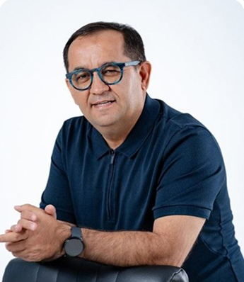
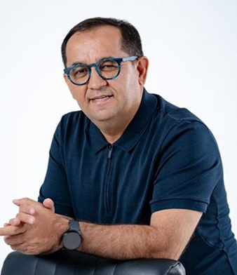

Vaqt topilmaydi.
Shoshilinch ishlar ko‘p. O‘zingiz uchun muhim ishga kelganda esa vaqt qolmaydi.
Ko‘proq ishlashning o‘zi yetmaydi. Vaqtingiz qayerga ketayotganini, pulingiz qayerga sarflanayotganini va nima uchun harakat qilayotganingizni aniq ko‘rish kerak. My Life Planner — shu masalalarga rejali yondashish ilmi.

Bir kunning band o‘tishi muammo emas. Muhim ishlar doim ortga qolishi — e’tibor berishga arziydigan holat.
Shoshilinch ishlar ko‘p. O‘zingiz uchun muhim ishga kelganda esa vaqt qolmaydi.
Daromad bor, lekin xarajatni xotiradan hisoblash qiyin. Nimani o‘zgartirish kerakligi noaniq.
Qayerga borishni bilasiz. Bugun qaysi ish sizni o‘sha maqsadga yaqinlashtirishini tanlash qiyin.
Hech narsani o‘zgartirmasangiz, ertangi kunning boshqacha bo‘lishi o‘z-o‘zidan hal bo‘lmaydi.

Husan Mamasaidov — tadbirkor, My Life Planner va «Pulni boshqarish ilmi» loyihalari asoschilaridan biri. Faoliyatida biznes va moliya yo‘nalishidagi bilimlarni amaliy tajriba bilan bog‘laydi.
Vaqt, pul va maqsad bir-biridan ajralgan masalalar emas. Dastur shu uch yo‘nalishga e’tibor qaratadi. Batafsil dars tarkibi va tarif shartlarini tanlovdan oldin ko‘rib chiqing.
«Bugun nimani bajaraman?» degan savoldan boshlang. Bandlikni emas, muhim ishlarni rejalashga e’tibor qarating. Maqsad — kunni tasodifiy vazifalarga topshirib qo‘ymaslik.
«Shuncha pul qayerga ketdi?» degan savolning o‘rniga aniq hisob qo‘ying. Kirim, xarajat va moliyaviy rejani ko‘rish — qaroringizni taxminga emas, yozuvga tayash uchun.
Ishingiz yurishsin. Lekin oila va shaxsiy maqsadlar doim ortga qolmasin. Siz uchun muhim yo‘nalishlarni birgalikda ko‘rib, ularga rejada joy ajrating.
Quyidagi uch qadam — o‘zingizni kuzatish uchun kichik mashq. Bu rasmiy dars jadvali emas, bugun boshlashingiz mumkin bo‘lgan amaliy yo‘nalish.
Bugungi vaqtingiz va xarajatlaringizni yozing. Sizni eng ko‘p chalg‘itayotgan narsani aniqlang.
O‘zingiz uchun bitta ustuvor maqsadni belgilang. Unga olib boradigan eng kichik qadamni yozing.
Shu qadamga vaqt ajrating. Kun yakunida nima bajarilganini va nimani o‘zgartirish kerakligini ko‘rib chiqing.
Muammo o‘zingizga tanish bo‘lishi muhim. Lekin bilimni hayotingizga qo‘llashga tayyorlik ham kerak.
Muallif — Husan Mamasaidov. Yangi oqim starti — 12-oktyabr 2026.
Qaror qilishdan oldin botda uch narsani aniqlang: siz tanlagan tarifning to‘liq tarkibi, amaldagi narxi va qatnashish shartlari.
Tarkib va tariflarni ko‘rish ↗Tugma rasmiy Telegram botini ochadi. Ma’lumot bilan tanishish — to‘lov qilish degani emas.
Bu savollarga aniq javob olmasdan shoshilib to‘lov qilmang.
Dastur va qatnashish shartlarini jamoa bilan aniqlashtiring.
Bu qarorni taxmin bilan qilmang. Bot orqali dars formati, jadvali va qatnashish talablarini aniqlang. Keyin o‘z vaqtingiz bilan solishtiring.
Yo‘q. Dastur sotib olishning o‘zi daromad yoki hayotiy natijani kafolatlamaydi. O‘rganish, amalda qo‘llash va shaxsiy sharoit natijaga ta’sir qiladi.
Dastur vaqtni, pulni va hayotni rejali boshqarish mavzulariga bag‘ishlangan. Batafsil tarkib va qatnashish shartlari uchun rasmiy ro‘yxatdan o‘tish botiga murojaat qiling.
Yangi oqim boshlanishi — 12-oktyabr 2026. Dars vaqti va kirish bo‘yicha aniq ko‘rsatmalarni tashkilotchilar bilan tekshiring.
Tugma orqali rasmiy botga o‘ting. Tarif tarkibi, amaldagi narx va to‘lov shartlarini solishtiring. Sizga kerakli bilim va qatnashish imkoniyatidan kelib chiqib tanlang.
«Dastur va tariflar» tugmasi sizni rasmiy Telegram botiga olib boradi. U yerda dastur bo‘yicha savollaringizni aniqlashtirib, ro‘yxatdan o‘tish bosqichlarini bajarasiz.
Husan Mamasaidovning vaqt va pul ilmi Telegram kanalida dastur e’lonlari va foydali materiallarni kuzatishingiz mumkin.
12-oktyabrda yangi oqim boshlanadi. Avval tarkib, narx va qatnashish shartlarini bilib oling. Keyin ongli qaror qiling.
Ma’lumotlaringiz arizangiz bo‘yicha bog‘lanish uchun yopiq ro‘yxatda saqlanadi. Ariza yuborish to‘lov yoki xarid majburiyatini yaratmaydi.